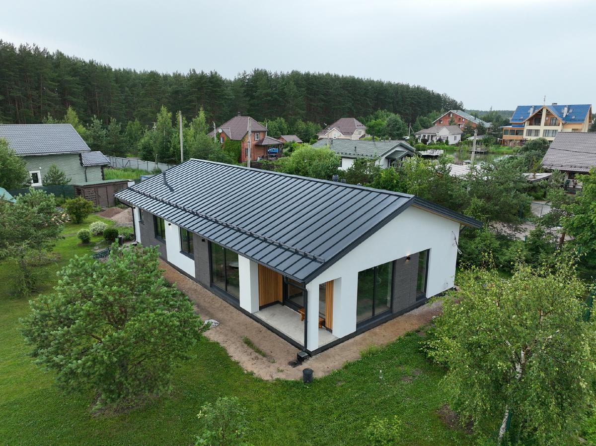
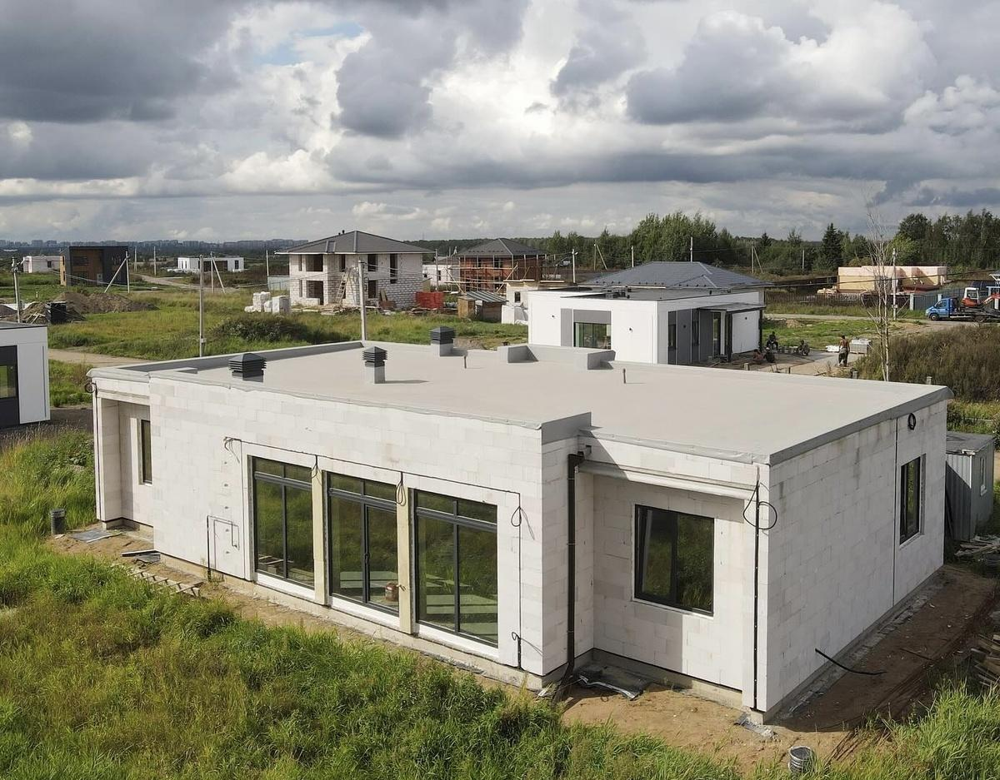
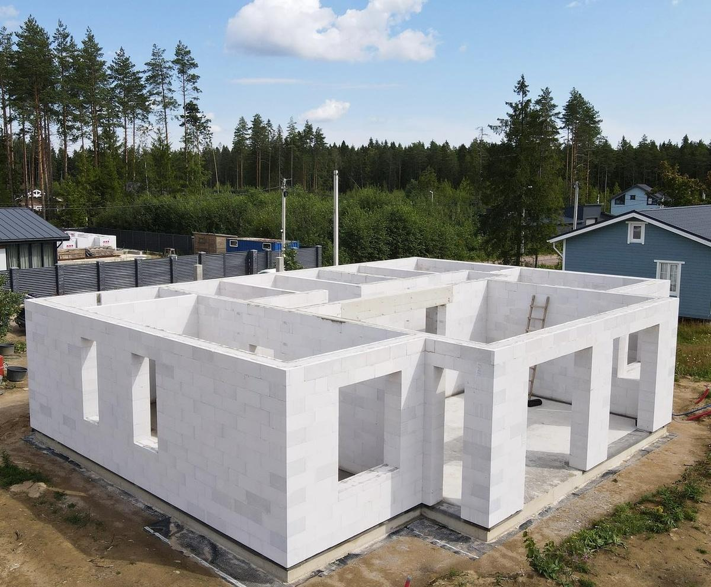
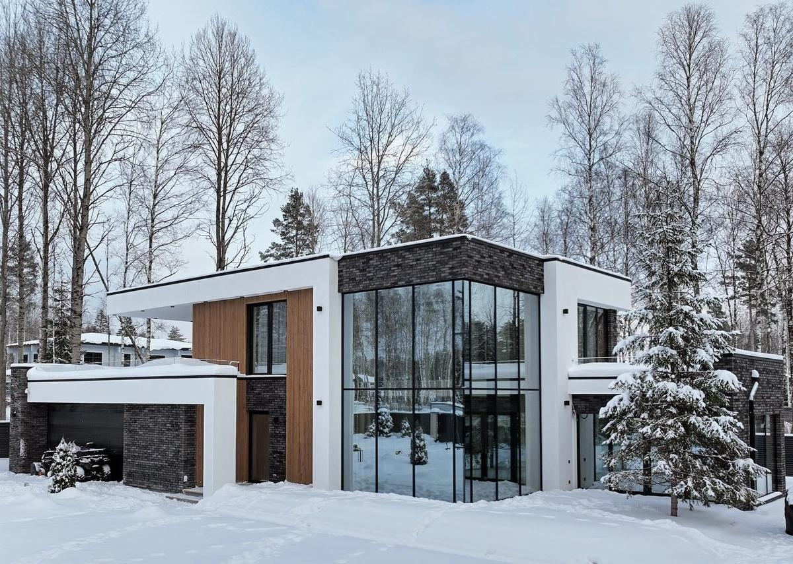

Строительство загородного дома из газобетона становится всё популярнее: материал выбирают за доступность, надёжность и быстрые сроки. Вопрос, который мы слышим постоянно — нужно ли утеплять дом из газобетона, чем утеплять стены и не «вылетит ли» отопление зимой.
Откуда уходит тепло на самом деле
Распространённое заблуждение, что основная часть теплопотерь идёт через стены. На практике через стены уходит не более 30%. Остальное — кровля, пол, окна и вентиляция. При проектировании мы уделяем внимание всем «слабым местам»:
- Утепляем кровлю 250–300 мм и пол — 100 мм ЭППС (для классической плиты).
- Минимизируем теплопотери на приточно-вытяжной вентиляции.
- Делаем четверти на окнах из ЭППС при отделке фасада — даже если стены без утепления. Это самые слабые места при проверке тепловизором, им нужно особое внимание.

Плотность и теплопроводность газобетона D400
В наших проектах для наружных стен мы используем газобетонные блоки D400 400 мм. D400 — один из самых тёплых стеновых материалов на российском рынке: низкая плотность (400 кг/м³), высокая пористость, поры заполнены воздухом. Теплоизоляционные свойства газобетона примерно в 1,3 раза выше, чем у древесины.
Стены в наших домах идут без дополнительного утепления — расчётное сопротивление теплопередаче укладывается в норматив с запасом около 15%. Если коротко: норматив для большинства регионов страны закрывает однослойной стеной 400 мм из D400 без утеплителя. Утепление в таком случае окупается медленно — больше 20 лет при текущих ценах на газ, который остаётся дешёвым источником тепла.

Дополнительный нюанс: мы кладём стены на пенополиуретановый клей. Шов получается нулевым, мостиков холода нет — кладка примерно на 20% теплее, чем на обычном цементном клее. Однослойная стена без утеплителя при таком решении работает лучше «бутерброда».
Если в доме нет газа
Тогда логика меняется — энергоэффективность нужно выжимать максимум. Варианты:
- Газобетон D500, 250–300 мм + утеплитель 100 мм. Стандартный энергоэффективный пирог при отоплении дорогим электричеством.
- Энергоэффективный газобетон D300, 400–500 мм без утепления. Дороже сам блок, но получается однослойная тёплая стена без дополнительного утеплителя.
Конкретный пирог выбирают по региону, источнику отопления и бюджету — это решение конструктора на этапе проекта.

Какой толщины должны быть стены
Прочность D400 позволяет возводить несущие стены. Толщина однослойной стены из D400 может варьироваться от 200 до 500 мм. Главный критерий — климат региона: чем суровее, тем толще нужна стена. В средней полосе России 400 мм D400 закрывают нормативы без дополнительного утепления.
Чего нельзя делать при утеплении газобетона
Если всё-таки решили утеплять — есть жёсткие правила, иначе утепление сработает в минус:
- Использовать паронепроницаемый утеплитель. ЭППС или пенополистирол на стене закупорят газобетон — влага останется в блоке, при морозе разорвёт поры.
- Не дать дому выстояться. На сырой кладке утеплитель «запечатает» воду внутри. Минимум один отопительный сезон до утепления.
- Работать при низких температурах. При температуре ниже +15 °C кристаллизация клея для утеплителя идёт не так, паровывод нарушается.
- Забыть про отделку. Газобетон под утеплителем всё равно нуждается в защите от механических повреждений и осадков.

Что DOMGAZOBETON делает на своих объектах
За 10 лет работы и 300 построенных домов (около 52 000 м²) выстроились стандарты: D400 400 мм, кладка на ППУ-клей, тёплый контур формируется самой стеной. На Open Village 2025 и Urban 2025 показывали типовой дом 300 м² с этим конструктивом — отапливаем газом, утеплитель в стенах не нужен. Наши проекты, пример конструктива.
Частые вопросы
Можно ли построить дом из газобетона D400 400 мм без утепления?
Да, для большинства регионов РФ при отоплении газом — это рабочая схема. Стена проходит по сопротивлению теплопередаче с запасом, утепление окупается дольше 20 лет.
Что выбрать, если в доме нет газа?
Либо D500 250–300 мм + минеральная вата 100 мм, либо D300 400–500 мм без утепления. Конкретное решение — за конструктором с учётом региона и источника отопления.
Каким утеплителем можно утеплять газобетон снаружи?
Только паропроницаемым — минеральная вата. ЭППС и пенополистирол на газобетоне закупоривают паровывод и приводят к конденсату в стене.
Когда можно начинать утеплять стены?
После одного отопительного сезона: блокам нужно выйти на равновесную влажность 4–5%. И только при температуре от +15 °C — иначе клей утеплителя не схватится правильно.
Источники
- НААГ — рекомендации по применению автоклавного газобетона: gazo-beton.org.
- ДОМ.РФ — рынок ИЖС и стандарты ИЖС: дом.рф.
- ТехноНИКОЛЬ — паропроницаемые системы и работа с газобетоном: tn.ru.